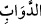
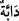
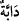
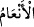
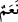
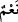

var. Kulları içinden ancak âlimler, Allah’tan (gereğince) korkar. Şüphesiz Allah,
daima üstündür, çok bağışlayandır.
“İnsanlardan, hayvanlardan ve davarlardan da yine böyle” beyaz, kırmızı, siyah
“türlü renkte olanlar var.”
“
”, “
” kelimesinin çoğuludur. Yer yüzünde yürüyen canlı anlamına gelen “
”
kelimesi daha çok at, katır ve merkep gibi binek hayvanları için kullanılır ve bu
hayvanların erkeklerine şâmildir. “
” kelimesi de “ ” ya da “ ” kelimesinin
çoğuludur. Sığır, koyun ve keçiler demektir. At, katır ve merkepler bunun dışındadır.
Bunların bazıları değişik renktedirler. Yâni meyve ve dağların değişik oluşu gibi.
“Kulları içinden ancak âlimler, Allah’tan (gereğince) korkar.”
Eşyanın yaratılması hususunda Allah’ın kudretini bilmeyen ve O’nun her şeyi bir
hâlden bir başka hâle koyduğunu idrak etmeyen bir kimse, Allah Teâlâ’dan nasıl
korkacak?
İrşâd’da der ki, bu âyet, insanların tabaka ve mertebelerindeki farklılıkları beyan
ettikten sonra Allah’tan kimlerin korktuğunu tayin ederek yukarıda geçen 18. âyetteki
sözün tekmilesidir. Bu açıklama manevi niteliklerde temsil yoluyla; sûrî ve maddi
niteliklerde ise tasrih yoluyla gerçekleşmiştir. Bu şekilde bu bölümlerden her biri ile
ilgili açıklama, gereği gibi tam ve yeterli olarak yapılmıştır. Yâni Allah’tan gaybi
olarak haşyet duyanlar, O’nu hakkıyla ve kendisine lâyık olan yüce sıfatları ve güzel
fiilleriyle bilenlerdir. Zirâ haşyet, hürmet ve korkunun kaynağı, saygı duyulan zâtı
tanımak ve onun niteliklerini bilmekle mümkündür. Buna göre kim Allah Teâlâ’yı daha
iyi bilir ve tanırsa, elbetteki ona karşı daha saygılı olur. Peygamberimiz (s.a.) “Sizin
Allah’a karşı en saygılı olanınız, en takvâlı olanınız benim.”[77] buyurmuştur.
Bundan dolayıdır ki Allah Teâlâ bu konunun ardından sonsuz kudretine delâlet eden
fiillerini zikretmiştir. Kâfirler ise bu mârifetten uzak oldukları için onlara uyarı yapmak
tamamen imkansız hale gelmiştir. Burada kendisine saygı duyulan zâtı (Allah lafzı
celilini) takdim ederek önce zikretmek fâil üzerinde bir tespit, tayin ve tahsis yapmak
içindir. Yâni “kulları arasında Allah’tan hakkıyla ancak âlimler korkar, haşyet duyar”
demektir.
Şayet burada “Allah” lâfzı sonraya bırakılırsa mânâ ve hüküm ters yüz olmuş olur ve
“âlimler ancak Allah’tan korkarlar” demek olur ki iki mânâ birbirine zıt ve farklıdır.
Birinci mânâda Allah’tan hakkıyla korkanların başkaları değil âlimler olduğu beyan
edilmekte; ikincisinde ise kendisinden korkulan zâtın başkası değil Allah olduğu
anlatılmaktadır. Ebû Hanife, Ömer b. Abdülaziz ve İbn Sirin burada Allah lafzı celilini
merfû, (zamme, ötre) ulema lafzını ise mensub (fetha-üstün) okumuşlardır. Burada korku
mânâsında olan haşyet, ta’zim, hürmet ve değer mânâsında mecaz olarak ifâde
edilmiştir. Zira ta’zim olunan zât heybetli olur.
Mânâ şöyledir: İnsanlar arasında kendisinden korkulan heybetli kimselere ta’zim,
hürmet ve saygı duyulduğu gibi Allah Teâlâ da kulları arasından âlimlere ta’zim eder ve